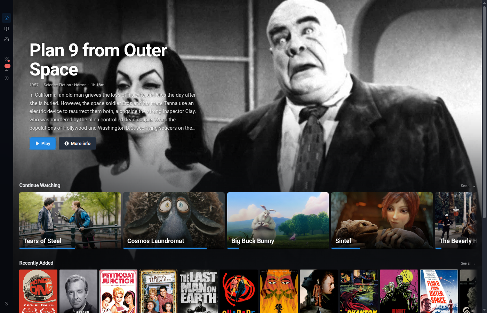
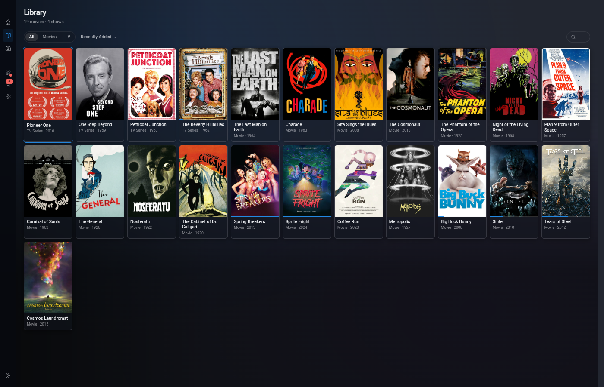
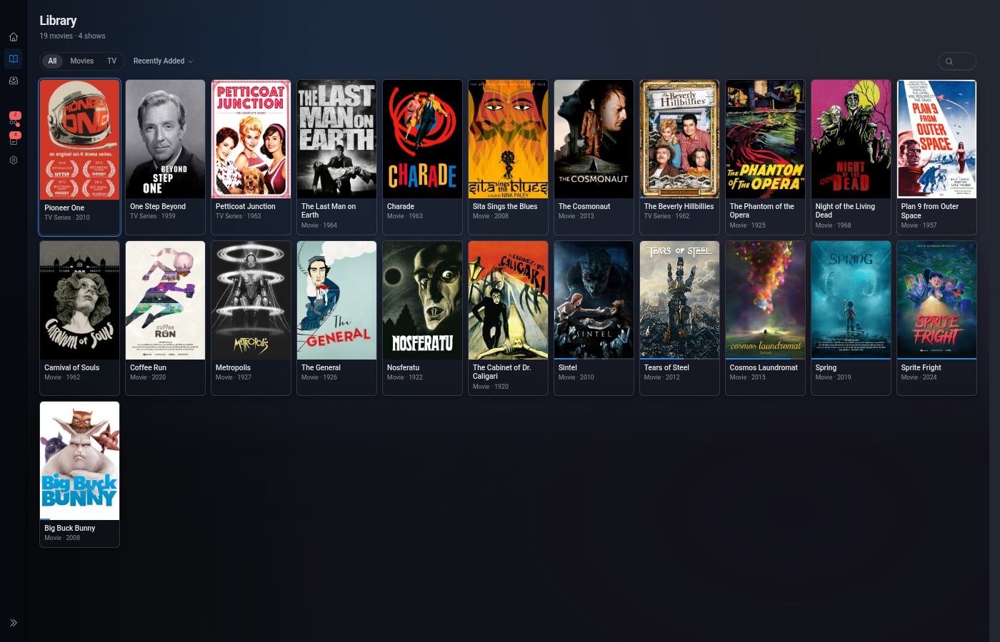
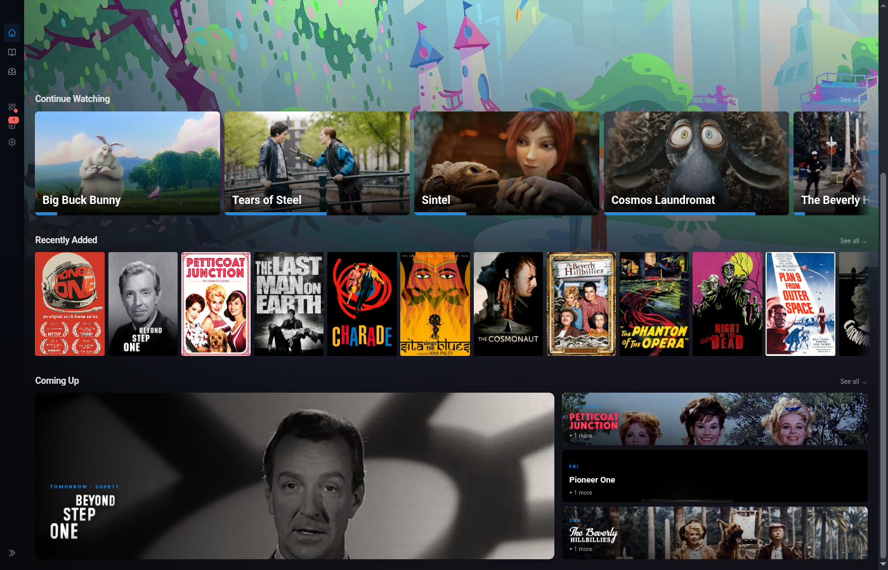
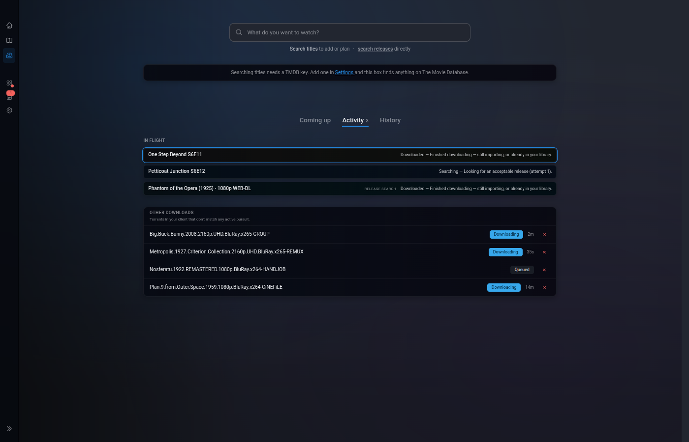
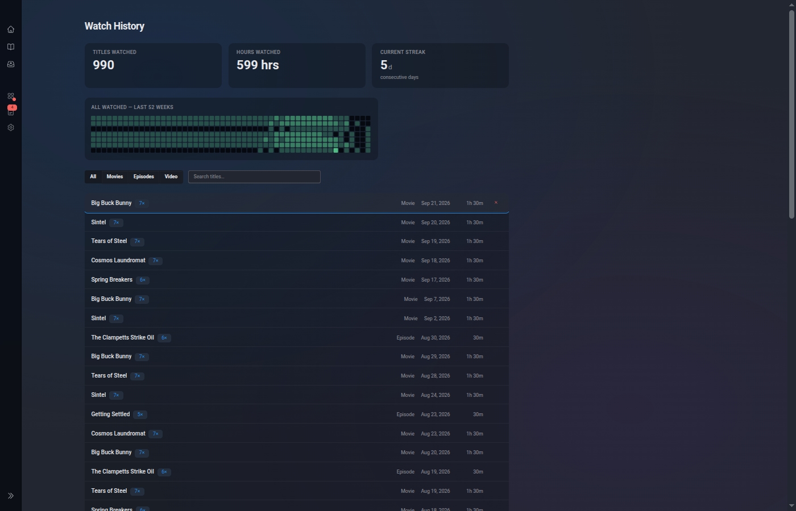
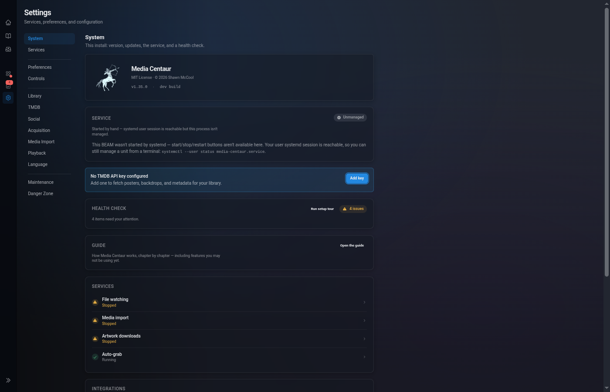
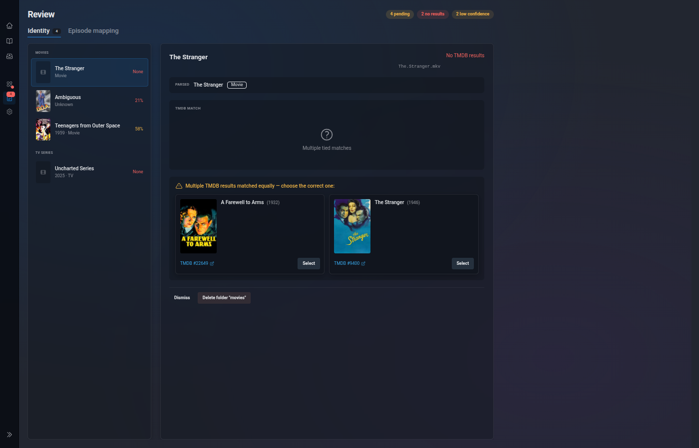

Library management
Watches your directories, identifies movies and TV shows via TMDB, downloads artwork. Low-confidence matches wait for manual review rather than polluting your library with wrong guesses.
Alpha · Linux · MIT
Point it at your video directories. Media Centarr identifies your movies and TV shows via TMDB, downloads artwork, tracks your progress, and plays everything locally through mpv — all from a real-time browser UI built for a TV across the room.
Zero-config SQLite. No Docker. No transcoding server. No accounts. No cloud.
Most self-hosted media setups are four services in a trench coat. Media Centarr is one Elixir app that does the library management, the metadata, the review workflow, and the playback — and hands the actual decoding off to mpv.
Watches your directories, identifies movies and TV shows via TMDB, downloads artwork. Low-confidence matches wait for manual review rather than polluting your library with wrong guesses.
Launches mpv on the local machine, tracks your progress, resumes where you left off, auto-advances to the next episode. World-class subtitle rendering out of the box.
Monitors TMDB daily for upcoming movies and new TV seasons tied to the shows in your library. No more "wait, there's a season 4?"
Search and queue downloads via Prowlarr. Entirely optional — Media Centarr is a full library manager without it. Bring your own indexers.
Keyboard and gamepad navigation — plus any universal remote that can send keystrokes (Bluetooth pairing or a Flirc USB). Large artwork, dark-first, built to drive a TV from across the room.
Every change — new file detected, metadata fetched, playback started — appears instantly via Phoenix LiveView. No polling. No refresh button.
Dark-first, keyboard- and gamepad-friendly, designed for the distance between a couch and a TV.











Media Centarr hands playback off to mpv instead of bundling a player or using an in-browser one. mpv renders every subtitle format correctly — ASS typesetting, SRT, PGS/SUP image subs, external or embedded — and plays virtually every container and codec at full fidelity.
mpv also exposes a Lua scripting surface and a stable JSON IPC socket, both of which Media Centarr uses. The couch overlays, progress tracking, and next-episode logic all hook into mpv rather than replacing it.
Deliberately not
Install
Downloads the latest release, verifies its checksum, installs atomically, and sets up a systemd user unit.
curl -fsSL https://raw.githubusercontent.com/media-centarr/media-centarr/main/installer/install.sh | shNeed details, an update path, or an uninstall? Installation guide →
Arch: pacman -S sqlite mpv inotify-tools
Debian/Ubuntu: apt install sqlite3 mpv inotify-tools